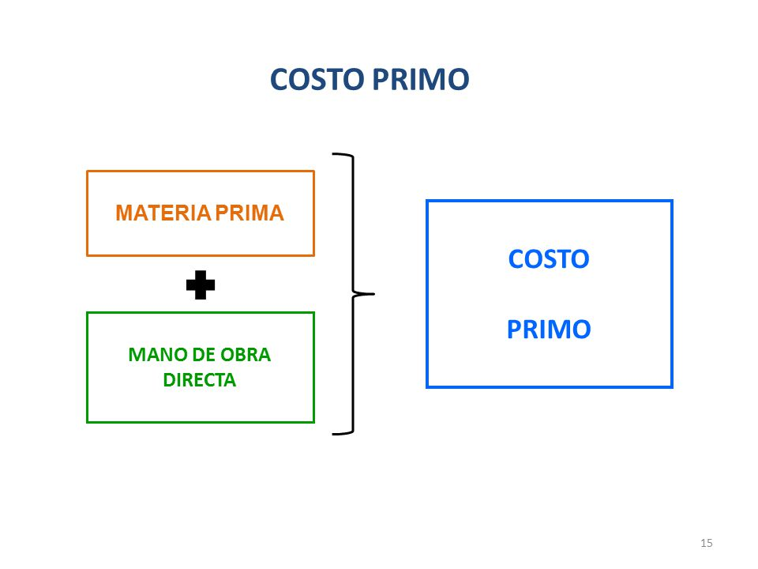
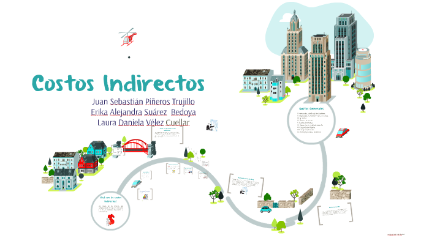
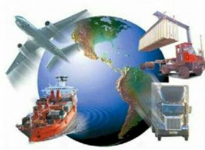
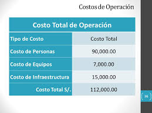

Teoria
Costo primo:
El costo primo es el resultado de sumar la materia prima y el costo de la mano de obra directa.

Costo de produccion:
La teoría de la producción analiza la forma en que el productor dado "el estado del arte o la tecnología, combina varios insumos para producir una cantidad estipulada en una forma económicamente eficiente".
Toda sociedad tiene que organizar de algún modo el proceso productivo para resolver adecuadamente los problemas económicos fundamentales. Pero independientemente de la organización que se adopte, hay ciertos principios económicos universales que rigen el proceso productivo. La producción de bienes y servicios puede estar en manos del Estado, como en el sistema comunista; o en manos de la empresa privada, como en el sistema capitalista. Pero en ambos casos la actividad productiva está condicionada por ciertas leyes o principios generales que tiene que tomar en consideración el empresario si desea lograr el uso más eficaz de los recursos económicos a su disposición; es decir, lograr la máxima producción con el máximo de economía, bajo cualquier tipo de organización socio-económica.
Costo indirectos:
Estos costos corresponden a recursos que participan en el proceso productivo pero que no se incorporan físicamente el producto final, ya que están vinculados al proceso más no al producto como tal
Pueden dividirse en:
Semi-directos: Son aquellos que no se aplican al producto, pero sí al sistema de costos.
Indirectos: No son directos al producto ni tampoco al sistema. Son comunes a dos o más productos, por lo que requieren de algún criterio de reparto.

Costo de distribucion:
Los costos de distribución son todos los desembolsos en que incurre un productor para hacer llegar sus productos, desde su planta de fabricación hasta el lugar en que son adquiridos, constituyéndose así en un componente fundamental del costo total para el productor y del precio que pagan los consumidores, por ello su análisis reviste gran importancia en términos de eficiencia empresarial.

Costo total de operacion:
costo de produccion + costo de distribucion.
